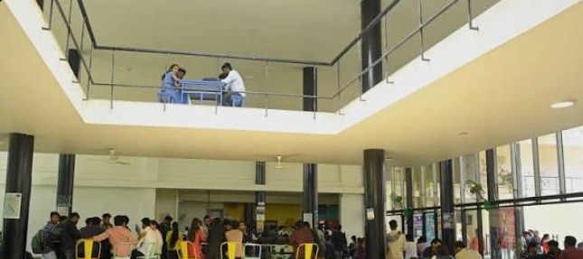
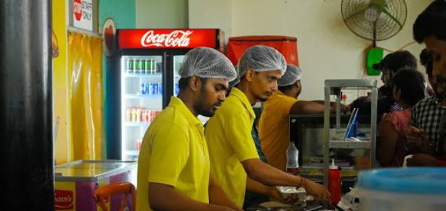
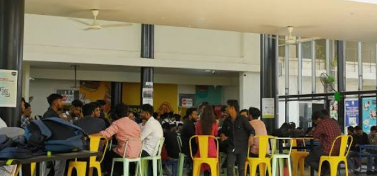
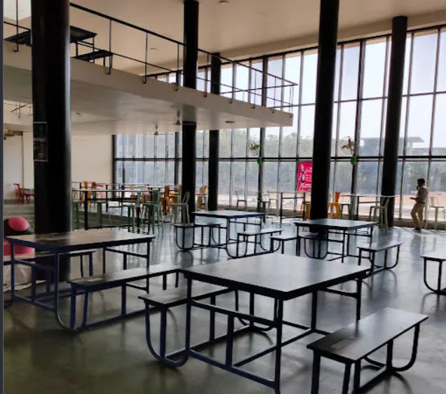

CAMPUS DINING AT SR UNIVERSITY
About SR University Canteen
Discover the campus dining experience at CanteenGo Campus Canteen.
A PLACE TO DINE ON CAMPUS
A campus space for everyday meals.
CanteenGo Campus Canteen provides a dining space for students at SR University. Browse the CanteenGo menu to see the food options represented in this project.
- Canteen name
- CanteenGo Campus Canteen
- Location
- Near the entrance of SR University
- Operating hours
- 8:00 AM – 8:00 PM
- Food preparation
- Prepared inside the university canteen
FOOD AVAILABILITY
Options for different meal times.
Menu items and availability can vary. Check the current menu before placing an order.
Lunch
Snacks
Beverages
Dinner

Food-serving counterFOOD PREPARATION & SERVICE
From the canteen counter to your table.
The canteen's serving counter is where students collect food. Food is prepared inside the university canteen, creating a convenient place for campus dining.
See menu options
Student dining areaSTUDENT DINING EXPERIENCE
A place to pause between campus activities.
Students can sit, eat and spend time in the canteen between academic activities. The dining area brings campus meals and student time together in one place.

Indoor seatingCANTEEN FACILITIES
Space for your campus break.
Facilities represented for the campus canteen include:
- Indoor seating
- Drinking water
- Handwashing facilities
- Food counters
- Dining area
- Takeaway facility
FOOD EXAMPLES
Campus menu favourites.
Idli and Dosa
Veg Meals
Chicken Biryani
Fried Rice
Tea and Coffee
Snacks and Puffs
Pizza and Burgers
PAYMENT METHODS
Payment at the canteen.
The canteen payment methods listed here are separate from the CanteenGo project's online payment demonstration.
Cash
UPI
Card
Online payment in CanteenGo is simulated for academic demonstration only. No money is transferred.
A LOOK AROUND
Inside the campus canteen.
Photographs of the SR University canteen provided for this project.
CANTEENGO PRE-ORDER DEMO
From menu browsing to pickup token.
CanteenGo is a college project ordering interface that demonstrates a campus pre-order workflow.
- 01
Browse the food menu
Explore the menu page for food options.
- 02
Select food items
Choose the items you want to order.
- 03
Add items to the cart
Review and adjust your cart before checkout.
- 04
Log in before checkout
Use your student account to continue.
- 05
Choose a pickup date and time
Select an available scheduled pickup slot.
- 06
Choose a demonstration payment option
Use the available offline flow or simulated online payment demo.
- 07
Receive confirmation and a token
Confirmed demo orders show an order confirmation and pickup token.
The online payment flow is simulated locally for this academic project. It does not connect to a payment gateway or transfer money.